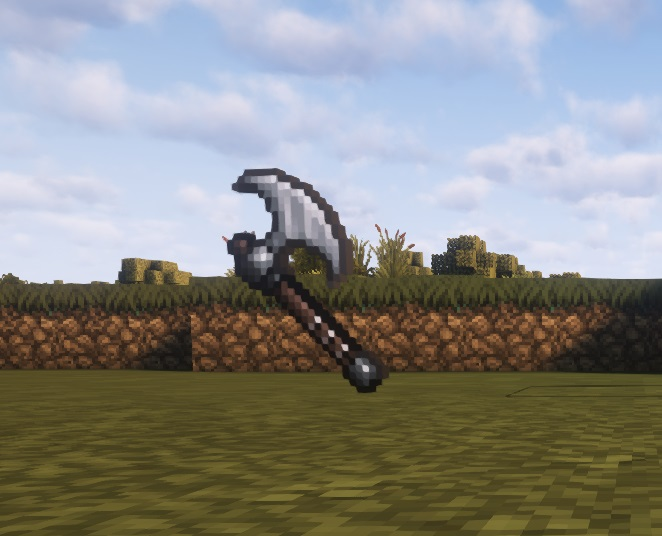

Galeria Projektu
Zajrzyj do naszej galerii, aby zobaczyć postęp prac nad serwerem SlavicRP. Publikujemy regularnie nowe zdjęcia, aby być na bieżąco z rozwojem projektu.
Kliknij na dowolny obrazek, aby zobaczyć więcej szczegółów i informacji!

System ścinania drzew

System przetrwania
Komendy roleplay